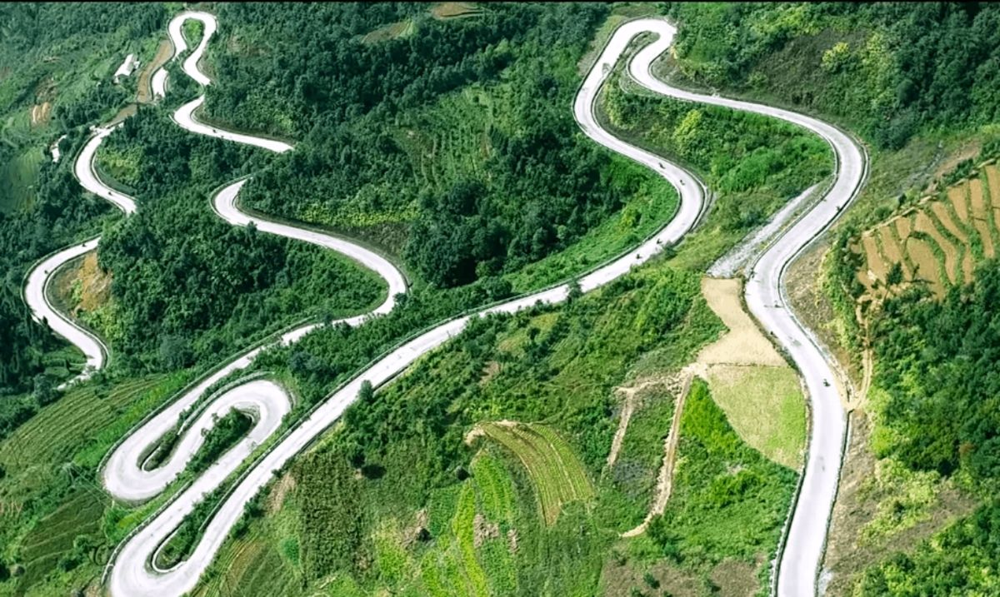
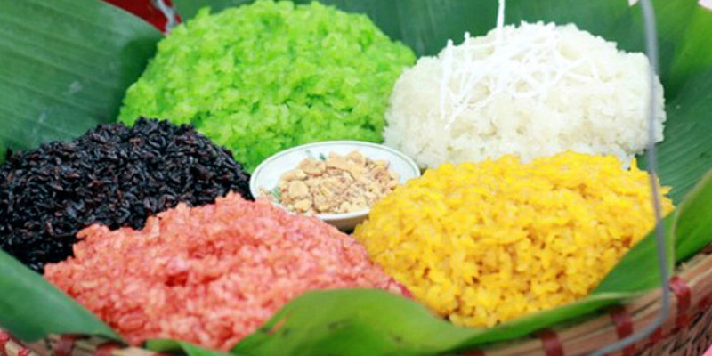
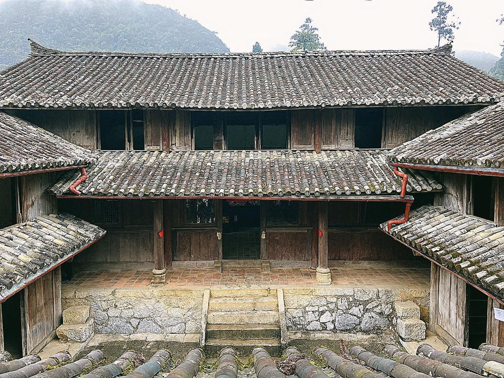
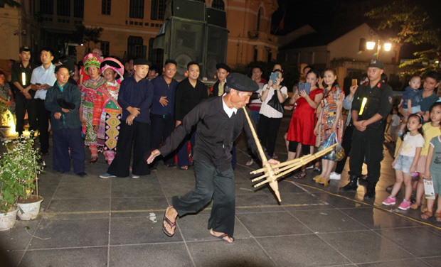

Đèo Mã Pí Lèng: Được mệnh danh là một trong "tứ đại đỉnh đèo" của Việt Nam. Cảm giác đứng trên đỉnh đèo, nhìn xuống dòng sông Nho Quế uốn lượn bên dưới vách đá dựng đứng là trải nghiệm không thể quên.
Dốc Thẩm Mã: Cung đường uốn lượn hình chữ S nổi tiếng, nơi bạn có thể dừng chân chụp ảnh với những em bé vùng cao đeo gùi hoa cải.
Đi thuyền trên sông Nho Quế: Ngồi trên thuyền xuôi dòng nước xanh ngọc bích, đi xuyên qua Hẻm Tu Sản – hẻm vực sâu nhất Đông Nam Á. Đây là góc check-in "triệu view" cho bất kỳ ai tới Hà Giang.
Chèo Kayak: Nếu muốn chủ động hơn, bạn có thể thuê thuyền Kayak để tự mình khám phá sự hùng vĩ của vách đá hai bên sông.
Thăm Dinh Thự Vua Mèo (Dinh họ Vương): Khám phá công trình kiến trúc cổ kính hòa quyện giữa phong cách người Mông và Trung Hoa, lắng nghe câu chuyện về gia tộc quyền lực nhất vùng cao một thời.
Chinh phục Cột cờ Lũng Cú: Điểm cực Bắc thiêng liêng của Tổ quốc, nơi bạn có thể chạm tay vào lá cờ đại 54m^2 tượng trưng cho 54 dân tộc anh em.
Đi chợ phiên vùng cao (Đồng Văn, Mèo Vạc): Diễn ra vào sáng Chủ Nhật, đây là bảo tàng sống về văn hóa với tiếng khèn, váy áo rực rỡ và đặc sản thắng cố, rượu ngô.
Làng văn hóa Lũng Cẩm: Tìm hiểu nếp nhà trình tường cổ của người Mông (nơi quay phim "Chuyện của Pao") với những hàng rào đá đặc trưng.
Chinh phục đèo Mã Pí Lèng: Đứng trên đỉnh đèo nhìn xuống hẻm vực Tu Sản sâu nhất Đông Nam Á, tận mắt thấy sự kỳ vĩ của những dãy núi đá vôi.
Đi thuyền trên sông Nho Quế: Trải nghiệm cảm giác lướt đi trên dòng nước xanh ngọc bích xuyên qua các vách đá dựng đứng.
Săn ảnh mùa hoa: Ngắm những cánh đồng hoa Tam Giác Mạch hồng rực (tháng 10-12) hoặc hoa mận, hoa đào nở trắng rừng (tháng 1-2).
Ngắm ruộng bậc thang Hoàng Su Phì: Chiêm ngưỡng những "mâm xôi vàng" rực rỡ khi lúa chín vào tháng 9 hàng năm.
Thời tiết 4 mùa: Hà Giang mỗi mùa một vẻ. Mùa đông (tháng 12-2) lạnh giá có khi có tuyết rơi; mùa hè (tháng 5-8) mát mẻ nhưng hay có mưa rào; đẹp nhất là mùa thu (tháng 9-11) trời trong xanh, nắng vàng hanh hao.
Sống cùng người bản địa: Nghỉ chân tại các homestay ở làng Lô Lô Chải hay Nặm Đăm để trải nghiệm sự nồng hậu, hiếu khách của người dân tộc Lô Lô, Dao, Mông.
Nhịp sống bình dị: Quan sát hình ảnh những em bé đeo gùi hoa cải tươi cười bên dốc Thẩm Mã hay những người phụ nữ miệt mài dệt vải bên hiên nhà, bạn sẽ thấy một Hà Giang thật dịu dàng và ấm áp.



